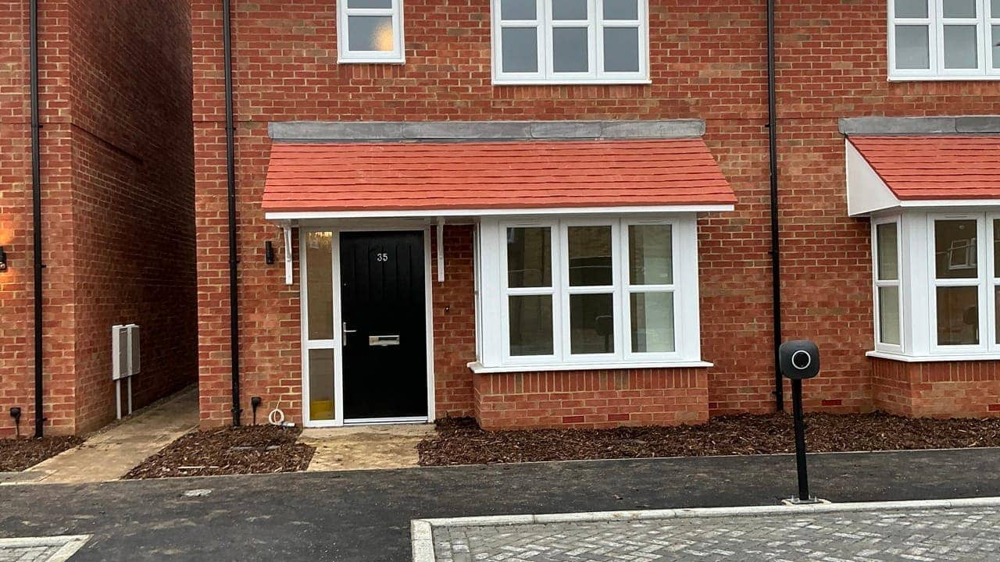

Affordable rent · Ref 140086
Command Road, Ramsgate, CT12 6RA
Apply-by date in archived listing: 19 Sept 2026
Listing details
There are 3 similar properties, if you apply for this property you will be considered for all of them This is a 3 bedroom family home benefiting from a lounge, kitchen diner, downstairs WC, bath with shower over, double glazing, gas central heating and allocated parking with an EV charging point Situated on the Places for People development in St Catherine's Grange in Ramsgate, this property is ideally located for all amenities and facilities. There are excellent transport links by road and regular bus services, the High Speed train to London St Pancras International, local shops are within easy reach with a Tesco store within walking distance, Westwood Cross shopping Centre is close by, there are local schools and colleges, local medical services and the QEQM Hospital in Margate and a range of leisure facilities including local beaches and the harbour. The property is due to be completed on 29th September 2026 Places for People does not permit adaptations, re-decoration or drilling into walls for the first 2 years of a new tenancy. These houses are not wheelchair-accessible. Thanet has a one-offer policy; applicants may be skipped if they do not respond to the offer within a reasonable time frame. Failure to respond to an offer could be deemed a refusal. Viewings of Council or Social Housing are not possible before an offer is made. Please only bid on homes you would be willing to accept.
View original listingThis is a static archived copy. Availability and application dates may have changed.